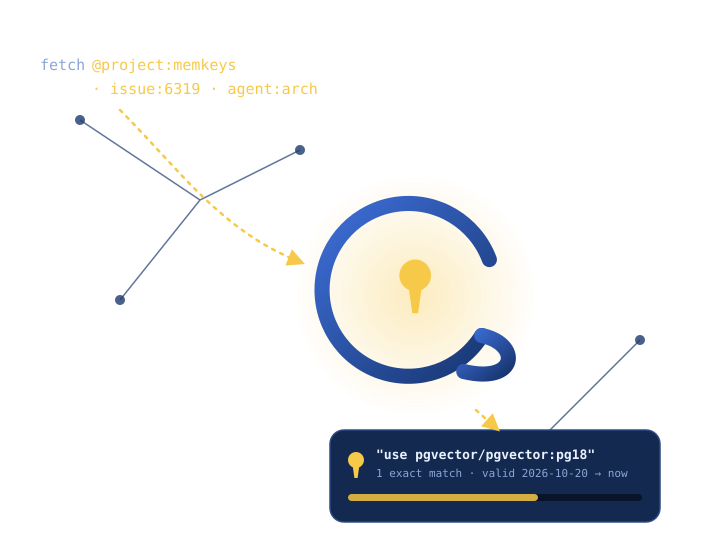

Keyed memory for agents
MemKeys stores each fact by the keys that describe it — and a validity window — so your agents retrieve it exactly, not by vector guesswork.

How it works
Agents store facts by attribute into one keyed core. The graph and the vector index are views computed on top of those facts — not separate stores you keep in sync.

Get started
Run the server, point an agent at it, and watch the memory graph fill in.
Start MemKeys as a container or a Helm chart. One Postgres, no extra services.
docker run ghcr.io/memkeys/memkeys-server
Add the MCP endpoint to your agent. Four operations: store, fetch, search, traverse.
claude mcp add memkeys
Open the Inspector to explore the keyed graph, follow edges, and see what was true when.
open /memory
Open source. Self-hosted. Keyed from the ground up.